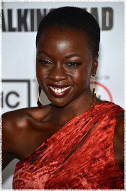

Данай Гурира
 Мишон - таинственная незнакомка, которая спасает Андреа от ходячих лезвием катаны. Согласно культовому персонажу из графического романа Роберта Киркмана, она тихий, но жестокий воин. Она и Андреа идут одной дорогой, но их связь будет проверена, когда они попадут в Вудбери к Губернатору.
Актриса и драматург Данай Гурира играет главную роль одного из наиболее ожидаемых и популярных персонажей в 3 сезоне Ходячих мертвецов.
До прихода в сериал Ходячие мертвецы, она закончила производство независимой драмы Джорджа Ма, история борьбы африканских женщин после прибытия в США. Также она играла главную роль в многократном получившем премии фильме Посетитель. Также её фильмография включает картины Три семьи и Беспокойный город. Роли в сериалах Закон и порядок: Преступный умысел, Обмани меня и Сестра Джеки а также эпизодическую роль в сериале Дэвида Саймона Тримей на канале HBO.
Гурира родилась в США и выросла в Зимбабве. Она получила МИД в театр из Нью-Йоркского университета после переезда обратно в США, её первоначальный успех был в качестве со-ведущего В Континууме. Гурира играла вне Бродвея в многочисленных театрах США и Африки, и получила многочисленные награды.
Впоследствии она получила грант для проведения исследований в Либерии и Сьерра-Леоне. Гурира выиграла в номинации Лучший драматург в театре NAACP и награду Лучшая Новая Актриса на премии Хелен Хэйс. Она также получила премию за исполнение роли Изабеллы в 2011 году в Парке Шекспира за производство Мера за меру.
Она - соучредитель Almasi - театральной компании по развитию и производству в Зимбабве. Она делит свое время между Нью-Йорком и Лос-Анджелесом.
Наиболее известна по фильмам:
Посетитель
Город призраков
Обмани меня
Жизнь на Марсе
Закон и порядок